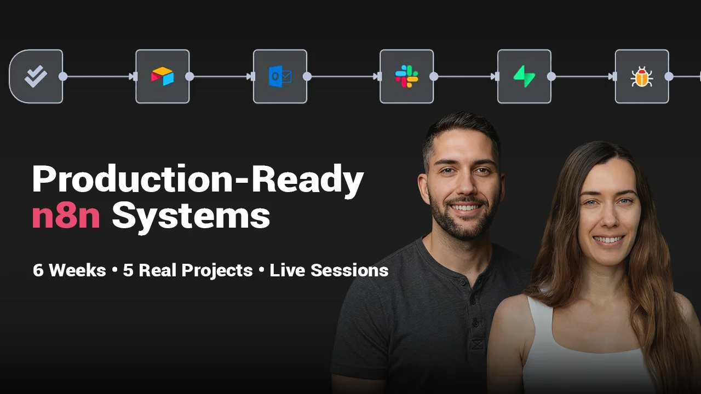

Cohort Program — Batch 2 Waitlist Open
A 6-week live cohort where you build production-grade AI automation systems in n8n — the same way we build them for real clients. Not prototypes. Not demos. Systems that actually run.
Batch 1 graduated. Batch 2 dates TBD — join the waitlist now.
Join the Waitlist
We can't guarantee outcomes. But here's what some Batch 1 students went on to do.
Cecile Huynh
Product Manager → Builder at n8n
Two months after the cohort wrapped, Cecile landed a job at n8n as a builder. She came with technical knowledge but wanted structure and a fast track into building real systems — the cohort was exactly that.
Read her post on LinkedIn →Timo de Groot
Content Marketer → 2 AI-powered platforms
The cohort was a catalyst. Timo — a content marketer for over a decade — had already been building AI systems when he joined. Afterwards he launched two platforms: Paths to Light and The AI Content Architect, both built on automation.
Read his post on LinkedIn →$1,500+ per system
Every automation in the curriculum is based on work we've sold to real clients. You're not learning from made-up examples.
MIT charges $3,000+
One student called this better than a $3,200 MIT program. You get practitioner-taught, hands-on builds — for a fraction of the price.
1-on-1 feedback, every week
Personalised feedback on your specific build — not generic notes on a forum. Direct instructor access throughout all 6 weeks.
Most automation courses teach you how tools work. This cohort teaches you how to think like an AI Operator.
An AI Operator doesn't just run workflows — they design them. They scope the problem before opening n8n, pick the right tools for the right reasons, understand what can go wrong, and build systems that integrate with existing infrastructure rather than starting from an empty slate. They own the full project lifecycle: from analysis to architecture to delivery.
This isn't a course about how to sell AI services or how to make money with automation. We don't cover sales, marketing, or how to find clients. What we teach is the craft: how to analyse a problem, design a solution that holds up, pick and integrate tools correctly, handle edge cases, and build things that work in the real world — not just in demos.
This is a how-to-build-what-doesn't-break course. And a how-to-think course.
You've built workflows before — in n8n, Make, Zapier, or code — and you want to go further than what tutorials cover.
You identify as a builder, or you're actively becoming one. Building is part of how you think about your work and your career direction.
You're comfortable with software and digital tools — you can read docs, explore APIs, and work through problems when you're stuck. You don't need to be a developer, but you need to be comfortable learning like one.
You're willing to build, break, debug, and rebuild — and you understand that this is the learning, not a detour from it.
Batch 1 included marketers, product managers, copywriters, and people transitioning into tech from other fields. What they shared: they had already decided they wanted to learn to build. They showed up for the skill — not just the output.
You want a project built for you. This cohort teaches you to build — it doesn't build on your behalf.
You're looking for a sales or marketing course. We don't teach how to find clients, price services, or sell automation. That's a different program.
You've never used an automation tool before and want to start from zero. The n8n Fundamentals course is the right starting point — come back when you're ready.
You want a passive learning experience. The cohort is active — you build, you get feedback, you iterate. Every week.
From Batch 1: the students who struggled most weren't the least technical — they were complete beginners who hadn't yet decided to make building workflows part of their identity. The right student is already on the path. Wrong fit doesn't succeed, and we'd rather have 12 right students than 30 wrong ones.
Break down real-world business problems before touching n8n. Learn to scope, map processes, and decide what to automate — and what not to.
Design workflows that handle edge cases, unexpected inputs, and real-world complexity — integrated with existing systems and CRMs, not built in a vacuum.
Build automations first. Add AI where it earns its place. Learn when agents are the right tool — and when they're overkill. Avoid the hype, understand the tradeoffs.
Make workflows that don't silently break. Build in monitoring, alerts, and recovery paths. Learn how to evaluate your systems to ensure they're actually robust — not just running.
Learn how to evaluate and pick the right tools for each layer of a system. Not just which tools exist — but when each one makes sense and why.
Real-time builds, peer feedback, and direct access to Nadia and Serop throughout the program. Seeing how others think about the same problem makes everyone sharper.
Six weeks. Five real automations built exactly as we built them for clients. Each project is a full build — from problem statement to working system. Expect to spend up to 15 hours some weeks. This is a professional program.
Your first production build. Handling inbound email intelligently — routing, classifying, responding. Covers the fundamentals of reliable workflow structure.
Automate the creation of structured business documents from raw inputs. Covers API auth, credential management, and connecting real business tools.
Extract, transform, and push real data from email into a CRM. Works with existing systems — not a clean-slate demo. Covers data parsing and CRM integration patterns.
Build a research agent that navigates the web to perform deep due diligence, enrichment, or lead generation. Covers when to use agents, how to structure them, and when simpler flows are better.
Build a complete end-to-end pipeline including a customer-facing UI connected to backend automation running on n8n. Covers chaining AI services, managing outputs, and presenting results through a real interface.
Build a support system backed by a vector database. Covers RAG architecture, connecting Supabase to n8n, and the difference between smart retrieval and actual AI agents.
Each week: one live session with project walkthrough, one homework feedback session. You build a complete automation as homework. Real projects take time — budget accordingly.
Can't attend live? All recordings shared with you to keep forever. Works for participants across time zones.
Async support throughout the 6 weeks. Nadia and Serop respond actively. Get unstuck fast, learn from others' questions.
Detailed feedback on your homework submissions. Not generic notes — on your specific build, your decisions, and what to do differently.
Based on real client projects. You complete and extend them — so you're working with real structure from day one, not blank canvases.
Not content creators. Both instructors build production systems for clients. What they teach, they do.
Workflow Architect & AI Automation Consultant — Vienna
Nadia has worked with 20+ clients on production automation systems — the kind that run in real businesses, handle real data, and break in real ways. She designs end-to-end AI workflows for startups and SMBs, and has trained thousands of people on n8n through workshops, online academies, and live programs.
Her background in web development and software systems means she understands how automations fit into real infrastructure. The cohort reflects her teaching philosophy: think before you build, then build until it breaks, then build it right.
AI Automation Agency Owner — Berlin, Germany
Serop runs an AI automation agency that charges $5k–$25k per project. He has shipped 20+ production systems for clients ranging from scaling startups to Fortune 500 companies — automations that handle real business logic, live in real infrastructure, and are maintained over time.
His background in machine learning gives him a precise mental model for where AI earns its place in a workflow and where it doesn't. In the cohort, Nadia and Serop each lead their own weeks — so you get two distinct practitioners' perspectives on how to think about and build production systems. Students in Batch 1 said this was one of the most valuable parts.
Six students. Six different starting points. One thing in common: they came to build.
Arpad Pinto
AI Practitioner — Building his own SaaS
Timo de Groot
Publishing Founder — Launched 2 AI-powered platforms
Cosmina Balu
AI Practitioner — Building her own product
Marie Ribbelov
Management Consultant & University Lecturer
Cecile Huynh
Product Manager → Builder at n8n
Clément Hynaux
Marketing Agency Lead — Running AI automations in-house
Recorded at the final Batch 1 session — students reflect on their experience and what the cohort was like. Watch it to get a feel for the energy and what being in the cohort actually means.
Dates and spots for Batch 2 are not yet announced. Join the waitlist and you'll be the first to know — before it opens publicly.
No spam. One email when Batch 2 opens.
By submitting, you agree to the Datenschutzerklärung. Your data is used only to notify you about the cohort.